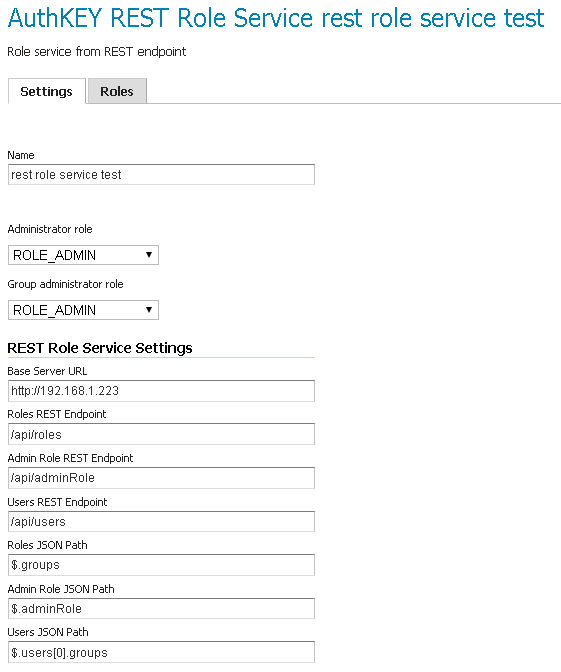

Role services
A role service provides the following information for roles:
- List of roles
- Calculation of role assignments for a given user
- Mapping of a role to the system role
ROLE_ADMINISTRATOR - Mapping of a role to the system role
ROLE_GROUP_ADMIN
When a user/group service loads information about a user or a group, it delegates to the role service to determine which roles should be assigned to the user or group. Unlike User/group services, only one role service is active at any given time. The default role service is set on the Settings page.
By default, GeoServer supports two types of role services:
- XML---(Default) role service persisted as XML
- JDBC---Role service persisted in a database via JDBC
Mapping roles to system roles
To assign the system role ROLE_ADMINISTRATOR to a user or to a group, a new role with a different name must be created and mapped to the ROLE_ADMINISTRATOR role. The same holds true for the system role ROLE_GROUP_ADMIN. The mapping is stored in the service's config.xml file.
<roleService>
<id>471ed59f:13915c479bc:-7ffc</id>
<name>default</name>
<className>org.geoserver.security.xml.XMLRoleService</className>
<fileName>roles.xml</fileName>
<checkInterval>10000</checkInterval>
<validating>true</validating>
<adminRoleName>ADMIN</adminRoleName>
<groupAdminRoleName>GROUP_ADMIN</groupAdminRoleName>
</roleService>
In this example, a user or a group assigned to the role ADMIN is also assigned to the system role ROLE_ADMINISTRATOR. The same holds true for GROUP_ADMIN and ROLE_GROUP_ADMIN.
XML role service
The XML role service persists the role database in an XML file. This is the default role service for GeoServer. This service represents the user database as XML, and corresponds to this XML schema.
Note
The XML role file, roles.xml, is located in the GeoServer data directory, security/role/<name>/roles.xml, where <name> is the name of the role service.
The service is configured to map the local role ADMIN to the system role ROLE_ADMINISTRATOR. Additionally, GROUP_ADMIN is mapped to ROLE_GROUP_ADMIN. The mapping is stored the config.xml file of each role service.
The following provides an illustration of the roles.xml that ships with the default GeoServer configuration:
<roleRegistry version="1.0" xmlns="http://www.geoserver.org/security/roles">
<roleList>
<role id="ADMIN"/>
<role id="GROUP_ADMIN"/>
</roleList>
<userList>
<userRoles username="admin">
<roleRef roleID="ADMIN"/>
</userRoles>
</userList>
<groupList/>
</roleRegistry>
This configuration contains two roles named ADMIN and GROUP_ADMIN. The role ADMIN is assigned to the admin user. Since the ADMIN role is mapped to the system role ROLE_ADMINISTRATOR, the role calculation assigns both roles to the admin user.
For further information, please refer to configuring a role service in the Web administration interface.
J2EE role service
The J2EE role service parses roles from the WEB-INF/web.xml file. As a consequence, this service is a read only role service. Roles are extracted from the following XML elements:
<security-role>
<security-role> <role-name>role1</role-name> </security-role> <security-role> <role-name>role2</role-name> </security-role> <security-role> <role-name>employee</role-name> </security-role>Roles retrieved:
role1role2employee
<security-constraint>
<security-constraint> <web-resource-collection> <web-resource-name>Protected Area</web-resource-name> <url-pattern>/jsp/security/protected/*</url-pattern> <http-method>PUT</http-method> <http-method>DELETE</http-method> <http-method>GET</http-method> <http-method>POST</http-method> </web-resource-collection> <auth-constraint> <role-name>role1</role-name> <role-name>employee</role-name> </auth-constraint> </security-constraint>Roles retrieved:
role1employee
<security-role-ref>
<security-role-ref> <role-name>MGR</role-name> <!-- role name used in code --> <role-link>employee</role-link> </security-role-ref>Roles retrieved:
MGR
JDBC role service
The JDBC role service persists the role database via JDBC, managing the role information in multiple tables. The role database schema is as follows:
| Field | Type | Null | Key |
|---|---|---|---|
| name | varchar(64) | NO | PRI |
| parent | varchar(64) | YES |
| Field | Type | Null | Key |
|---|---|---|---|
| rolename | varchar(64) | NO | PRI |
| propname | varchar(64) | NO | PRI |
| propvalue | varchar(2048) | YES |
| Field | Type | Null | Key |
|---|---|---|---|
| username | varchar(128) | NO | PRI |
| rolename | varchar(64) | NO | PRI |
| Field | Type | Null | Key |
|---|---|---|---|
| groupname | varchar(128) | NO | PRI |
| rolename | varchar(64) | NO | PRI |
The roles table is the primary table and contains the list of roles. Roles in GeoServer support inheritance, so a role may optionally have a link to a parent role. The role_props table maps additional properties to a role. (See the section on Roles for more details.) The user_roles table maps users to the roles they are assigned. Similarly, the group_roles table maps which groups have been assigned to which roles.
The default GeoServer security configuration is:
| name | parent |
|---|---|
| Empty | Empty |
| rolename | propname | propvalue |
|---|---|---|
| Empty | Empty | Empty |
| username | rolename |
|---|---|
| Empty | Empty |
| groupname | rolename |
|---|---|
| Empty | Empty |
For further information, please refer to configuring a role service in the Web administration interface.
LDAP role service
The LDAP role service is a read only role service that maps groups from an LDAP repository to GeoServer roles.
Groups are extracted from a specific LDAP node, configured as the Groups search base. A role is mapped for every matching group. The role will have a name that is built taking the Group common name (cn attribute), transformed to upper case and with a ROLE_ prefix applied.
It is possible to filter extracted groups using an All groups filter (defaults to cn=* that basically extracts all nodes from the configured base). It is also possible to configure the filter for users to roles membership (defaults to member={0}).
A specific group can be assigned to the ROLE_ADMINISTRATOR and/or the ROLE_GROUP_ADMIN administrative roles.
Groups extraction can be done anonymously or using a given username/password if the LDAP repository requires it.
An example of configuration file (config.xml) for this type of role service is the following:
<org.geoserver.security.ldap.LDAPRoleServiceConfig> <id>-36dfbd50:1424687f3e0:-8000</id> <name>ldapacme</name> <className>org.geoserver.security.ldap.LDAPRoleService</className> <serverURL>ldap://127.0.0.1:10389/dc=acme,dc=org</serverURL> <groupSearchBase>ou=groups</groupSearchBase> <groupSearchFilter>member=uid={0},ou=people,dc=acme,dc=org</groupSearchFilter> <useTLS>false</useTLS> <bindBeforeGroupSearch>true</bindBeforeGroupSearch> <adminGroup>ROLE_ADMIN</adminGroup> <groupAdminGroup>ROLE_ADMIN</groupAdminGroup> <user>uid=bill,ou=people,dc=acme,dc=org</user> <password>hello</password> <allGroupsSearchFilter>cn=*</allGroupsSearchFilter> </org.geoserver.security.ldap.LDAPRoleServiceConfig>
For further information, please refer to configuring a role service in the Web administration interface.
REST role service
The REST role service is a read only role service that maps groups and associated users to roles from a remote REST web service.
The REST service must support JSON encoding.
Here is a listing of significant methods provided by the REST Role Service (based on the LDAP role service, which similarly has to make network calls to work):
| Method | Mandatory |
|---|---|
| getUserNamesForRole(roleName) | N (implemented in LDAP, but I don't see actual users of this method besides a utility method that nobody uses) |
| getRolesForUser(user) | Y |
| getRolesForGroup(group) | N |
| getRoles() | Y (used by the UI) |
| getParentRole(role) | N |
| getAdminRole() | Y |
| getGroupAdminRole() | Y |
| getRoleCount() | Y (does not seem to be used much, we can trivially implement it from getRoles() |
REST APIs
The following is an example of the REST API the role service may handle. The JSON and remote endpoints may differ; this is configurable via UI, allowing the REST role service to connect to a generic REST Service
From the above we could have the following REST API to talk to
../api/roles
Returns the full list of roles (no paging required, we assume it's small). Example response:
../api/adminrole
Returns the role of the administrator (yes, just one, it's strange...):
../api/users/<user>
Returns the list of roles for a particular user. Example response:
Configurable API
The GeoServerRoleService talking to a remote service provides the following config parameters:
- Base URL for the remote service
- Configurable URLs for the various calls
- JSON paths to the properties that contain the list of roles, and the one admin role
The above can be configured via the Web administration interface. The figure below shows the REST role service options configured to be compatible with the sample APIs above:

REST based role service configuration panel